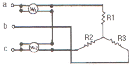
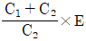
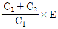
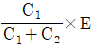
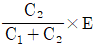
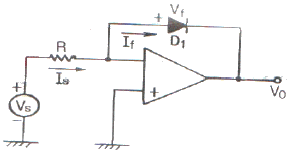
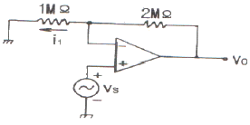

항공전자정비기능사 (2010-10-03 기출문제)
1과목: 임의 구분
1. 일반적으로 블랙박스라고 불리는 비행 자료 기록장치는 쉽게 눈에 띄도록 무슨 색으로 도색되어 있는가?
- 검은색
- 오렌지색
- 자주색
- 흰색
(정답률: 알수없음)

2. 황공기의 위치를 확인하기 위하여 산, 강, 건물과 같은 지형지물을 참조하여 현재의 위치를 파악하는 항법은?
- 지문항법
- 자동항법
- 진방위법
- 진침로법
(정답률: 알수없음)
3. 비행자료 기록장치에 대한 설명으로 틀린 것은?
- 30분간 1100℃의 온도에 견딜 수 있어야 한다.
- 물속에서 30일간 37.5kHz의 단파 펄스를 낸다.
- 물속에 빠지는 경우에 대비해서 수중위치 표지기를 갖고 있다.
- 수색 시 눈에 잘 뜨이도록 밝은 오렌지색 또는 밝은 황색으로 도색되어 있다.
(정답률: 알수없음)
4. ADC(AirData Computer)장치에서 얻을 수 있는 자료가 아닌 것은?
- 마하수
- 대기속도
- 고도
- 대지속도
(정답률: 알수없음)
5. 디지털 신호를 전송할 때 신호에 따라 반송파의 주파수를 변화시키는 변조 방식은?
- AM
- FM
- PSK
- FSK
(정답률: 알수없음)
6. 국제 민간 항공 기구의 자동 착륙 활주로 시정 등급 분류에서 카테고리 ℃℃ⅢA라 함은?
- 활주로까지의 거리가 30[m]이상인 경우
- 활주로까지의 거리가 200[m]이상인 경우
- 활주로까지의 거리가 400[m]이상인 경우
- 활주로까지의 거리가 800[m]이상인 경우
(정답률: 알수없음)
7. 항공기의 수평 꼬리날개의 압력 변화를 일으켜 양력의 크기가 달라지면서 발생되는 피칭 모멘트에 의해 피치(pitch) 자세를 변화시키는 조종면은?
- 방향(rudder)키
- 승강(elevator)키
- 도움(aileron)키
- 수직꼬리(vertical tail)날개
(정답률: 알수없음)
8. 항공기가 운항하거나 착륙하는 과정에서 전파를 이용하여 지표면까지의 정확한 고도를 측정하는데 사용되는 장치는?
- 압력고도계
- 전파고도계
- 기상레이더
- 자이로스코프
(정답률: 알수없음)
9. 관성 항법 장치(INS)의 구성 요소가 아닌 것은?
- 고도계
- 가속도계
- 자이로 기준장치
- 안정대
(정답률: 알수없음)
10. 마커 비컨의 지상장치는 활주로의 진입단 전방에 몇 개의 지점에 설치되는가?
- 1개 지점
- 2개 지점
- 3개 지점
- 4개 지점
(정답률: 알수없음)
11. 승무원의 음성을 기록하여 사고의 원인 규명에 중요한 단서를 제공하는 기록 장치는?
- FDR
- CVR
- QAR
- FOQA
(정답률: 알수없음)
12. 빛의 속도가 3×108 [m/s]이고 파장이 1[m]일 때 주파수는?
- 3[MHz]
- 30[MHz]
- 300[MHZ]
- 3000[MHz]
(정답률: 알수없음)
13. 실제 비행기가 추락할 때의 비행 자료 기록 장치의 충격을 재현하기 위한 시험은?
- 정지 누름 시험
- 충돌 충격 시험
- 충격 관통 시험
- 유체 잠김 시험
(정답률: 알수없음)
14. 대형 항공기의 요구 조건을 충족시키는 비행 자료 수집장치(FDAU)가 장착되는 위치는?
- 항공기의 뒷부분
- 항공기의 앞부분
- 항공기의 중간부분
- 항공기의 날개부분
(정답률: 알수없음)
15. 항공기에 사용되는 단파 통신장치(HF)에 대한 설명으로 틀린 것은?
- 2~25MHz 사이의 주파수를 사용한다.
- 전리층 반사에 의하여 원거리까지 교신할 수 있다.
- 초단파 통신에 비하여 안정된 통신 방법이며 주로 공항 주변에서 사용한다.
- 진폭 변조를 하며 대부분 단측파대(SSB)만의 전파만을 발사한다.
(정답률: 알수없음)
16. 자동 조종 장치의 시스템에서 컴퓨터가 하는 역할은?
- 조타 신호 산출
- 기계적인 출력으로 변환
- 각속도 검출
- 자동 조종 장치의 분리 경고
(정답률: 알수없음)
17. 항공기가 마커 비컨의 상공을 통과할 때 마커비컨으로부터 활주로와의 거리를 조종사가 알 수 있게 적용하고 있는 방법은?
- 가청음만 적용
- 표시등만 적용
- 가청음 및 표시등
- 가청음 또는 표시등
(정답률: 알수없음)
18. 항공기의 좌우 횡방향 운동과 롤 운동, 그리고 요 운동이 복합적으로 일어나는 현상을 더치롤이라 하는데 이 운동 방지를 위해 사용하는 장치는?
- 요 댐퍼
- 선회 자동 조종장치
- 비행 지시 장치
- 롤 채널
(정답률: 알수없음)
19. 지향성이 강한 루프 안테나를 사용하여 전파가 들어오는 방향을 측정하여 항공기의 방위각을 나타내는 장치는?
- VOR
- ADF
- DME
- TACAN
(정답률: 알수없음)
20. 항공기에서 지상에 설치된 장비에 특정 신호를 보내고 이 신호가 다시 응답될 때까지의 시간을 측정하여 거리를 측정하는 항법장치는?
- DME
- VOR
- ADF
- TACAN
(정답률: 알수없음)
2과목: 임의 구분
21. 항공기의 전파 고도계에서 지표면으로 송신된 전파가 수신될 때 까지 걸린 시간을 측정하여 보니 4μs 이었다. 이 때 항공기와 지표면까지의 거리는?
- 300m
- 400m
- 500m
- 600m
(정답률: 알수없음)
22. 전파 고도계(Radio altimeter)의 설명으로 옳은 것은?
- 항상 해면을 기준으로 하는 고도를 지시한다.
- 항상 지형과 항공기간의 고도를 지시한다.
- 높은 고도용의 FM형과 낮은 고도용의 펄스형이 있다.
- 지표면에서 전파는 난반사되므로 오차 없이 고도를 측정할 수 있다.
(정답률: 알수없음)
23. 관성 항법 장치(INS)에서 측정돈 가속도를 항공기의 위치정보로 변환하기 위하여 필요한 것은?
- 적분기
- 비교기
- 미분기
- 서보 모터
(정답률: 알수없음)
24. 전자기파에 대한 설명으로 틀린 것은?
- 전기장과 자기장이 파동으로 전달되므로 진공 중에서도 전파된다.
- 파동의 진행속도는 빛의 속도와 같다.
- 맥스웰은 방정식으로 전자기파를 예측하였다.
- 페러데이는 이 전자기파의 존재를 입증하였다.
(정답률: 알수없음)
25. 전기신호제어방식의 특성에 대한 설명으로 적합하지 않은 것은?
- 안정성 향상과 탑승감 개선에 기여하는 바가 크다.
- 기계적인 연결 장치를 복잡화 시키고, 항공기의 전체 중량을 증가시킨다.
- 고장여부를 계속 감시하는 고장진단기능과 비행제어 시스템을 재구성하는 기능까지 수행할 수 있도록 개발되고 있다.
- 시스템간의 전기적 간섭 현상을 막고 번개와 같은 전기적 충격에 영향을 받지 않도록 전선간의 차폐를 엄밀하게 시켜야 한다.
(정답률: 알수없음)
26. 전기력선은 전계에 가상적으로 그어진 곡선으로 전계의 방향은 그 선상에 대해 어떠한 방향인가?
- 곡선
- 접선
- 법선
- 직선
(정답률: 알수없음)
27. 정전에너지(콘덴서에 축적되는 에너지)에 대한 식으로 틀린 것은? (단, 정전에너지는 W, 전위차는V, 정전 용량은 C, 전기량은 Q이다.)
- W = (1/2)CV2
- W = (1/2)QV
- W = (1/2)QV2
- W = (1/2)ㆍ(Q2/C)
(정답률: 알수없음)
28. 0.4[㎌]와 0.6[㎌]의 두 콘덴서를 직렬로 접속했을 때의 합성 정전 용량은?
- 2.4[㎌]
- 1.0[㎌]
- 0.4[㎌]
- 0.24[㎌]
(정답률: 알수없음)
29. 전기회로에서 도선의 반지름만을 3배로 하면, 그 전기저항은?
- 9배로 증가한다.
- 1/9로 감소한다.
- 3배로 증가한다.
- 1/3로 감소한다.
(정답률: 알수없음)
30. 1[N]을 [kgf] 단위로 환산하면?
- 1/980 [kgf]
- 980 [kgf]
- 1/9.8 [kgf]
- 9.8 [kgf]
(정답률: 알수없음)
31. 그림과 같이 단상전력계 W1 , W2 의 지시값이 각각 100[W]라면 전 소비전력은?

- 100[W]
- 173[W]
- 200[W]
- 248[W]
(정답률: 알수없음)
32. 콘덴서 C1 과 C2 의 직렬회로에 E[V]의 전압을 인가하면 C2 에 걸리는 전압 E2[V]의 값은?




(정답률: 알수없음)
33. 동일한 크기의 전류가 흐르고 있는 왕복 평행 도선에서 간격을 2배로 넓히면 작용하는 힘은?
- 2배로 된다.
- 1/2로 된다.
- 4배로 된다.
- 1/4로 된다.
(정답률: 알수없음)
34. R - L 직렬회로의 설명 중 틀린 것은?
- t=0에서 직류전압 E를 가했을 때 i(t=0) =0 이다.
- t=0에서 직류전압 E를 가했을 때 VL(t=0) =E 이다.
- 정상상태에 도달하면 VR = E 이다.
- RL 직렬회로의 시정수는 R/L이다.
(정답률: 알수없음)
35. 자기회로에서 코일의 권수와 전류와의 곱은?
- 기전력
- 기자력
- 자화력
- 전자력
(정답률: 알수없음)
36. 진폭변조에서 변조를 크게 하면?
- 변조파의 주파수 특성이 좋아진다.
- 대역폭이 넓어진다.
- 반송파가 커진다.
- 반송파가 작아진다.
(정답률: 알수없음)
37. 4개의 다이오드를 사용하여 회로가 복잡하지만 정류 효율이 가장 좋은 장점을 가진 정류회로는?
- 반파 정류회로
- 전파 정류회로
- 브리지 정류회로
- 배전압 정류회로
(정답률: 알수없음)
38. 연산증폭기의 특징으로 틀린 것은?
- 전압 이득이 크다.
- 입력 임피던스가 높다.
- 출력 임피던스가 낮다.
- 단일 주파수만을 통과시킨다.
(정답률: 알수없음)
39. 증폭도가 100인 증폭회로에 궤환율 0.01인 부궤환을 걸면 증폭도는?
- 33
- 50
- 66
- 100
(정답률: 알수없음)
40. 연산증폭기의 연산의 정확도를 높이기 위해 요구되는 사항이 아닌 것은?
- 큰 증폭도와 좋은 안정도를 필요로 한다.
- 많은 양의 부궤환을 안정하게 걸 수 있어야 한다.
- 좋은 차단 특성을 가져야 한다.
- 높은 주파수의 발진출력을 내야 한다.
(정답률: 알수없음)
3과목: 임의 구분
41. 두 개의 자기인덕턱스가 각각 5[mH], 20[mH]이고, 결합계수가 0.9이면 상호인덕턴스는?
- 0.9[mH]
- 1[mH]
- 9[mH]
- 10[mH]
(정답률: 알수없음)
42. 단상 전파정류기의 DC 출력전압은 단상 반파정류기 DC 출력전압의 몇 배인가?
- 2배
- 3배
- 4배
- 5배
(정답률: 알수없음)
43. LC 발진회로를 바이어스 전압에서 볼 때 증폭동작은?
- A급
- B급
- C급
- D급
(정답률: 알수없음)
44. 시정수가 매우 큰 RC 저역통과여파 회로의 기능으로 가장 적합한 것은?
- 적분기
- 미분기
- 가산기
- 감산기
(정답률: 알수없음)
45. 콘덴서 입력형 전파 정류회로의 입력 전압이 실효값으로 12[V]일 경우 정류 다이오드의 최대 역 전압은?
- 약 12[V]
- 약 17[V]
- 약 24[V]
- 약 34[V]
(정답률: 알수없음)
46. 그림과 같은 연산증폭기의 명칭은? (단, 입력전압 Vs 는 양의 값을 갖는다.)

- 가산기
- 미분 연산기
- 적분 연산기
- 대수증폭기
(정답률: 알수없음)
47. 구형파의 입력을 가하여 푹이 좁은 트리거 펄스를 얻는데 사용되는 회로는?
- 적분회로
- 미분회로
- 발진회로
- 클리핑회로
(정답률: 알수없음)
48. 다음과 같은 연산증폭기 회로에서 2MΩ 에 흐르는 전류는?

- 0
- i1
- 2i1
- 4i1
(정답률: 알수없음)
49. 교류전압을 오실로스코프로 측정 시 VOLTS/DIV이 [5V/DIV]이고 peak to peak 값이 2[DIV]일 때의 최대값은?
- 2.5[V]
- 5[V]
- 10[V]
- 50[V]
(정답률: 알수없음)
50. 표준전지의 기전력과 미지전지의 기전력을 비교하여 1[V]이하의 직규 전압을 정밀하게 측정할 수 있는 계기는?
- 배율 전압계
- 회로 시험기
- 직류 전위차계
- 직류 전자 전압계
(정답률: 알수없음)
51. 열전쌍형 계기로 이용되는 측정 분야가 아닌 것은?
- 전압계
- 전류계
- 전력계
- 주파수계
(정답률: 알수없음)
52. 2전력계법과 3전력계법으로 주로 측정하는 것은?
- 고주파 전력
- 가청 주파수
- 단상 고류 전력
- 3상 교류 전력
(정답률: 알수없음)
53. 고주파 주파수를 측정하기 위한 계기는?
- 진동편형 주파수계
- 가동철편형 주파수계
- 전력계형 주파수계
- 헤테로다인 주파수계
(정답률: 알수없음)
54. 오실로스코프로 측정할 수 없는 것은?
- 전류
- 위상차
- 주파수
- 인덕턴스
(정답률: 알수없음)
55. 소인 발진기의 측정할 수 없는 것은?
- 전자회로의 출력 전압
- 전자회로의 전류 특서
- 전자회로의 주파수 특성
- 전자회로의 전압 특성
(정답률: 알수없음)
56. 지시계기의 3대 요소가 아닌 것은?
- 구동 장치
- 제어 장치
- 출력 장치
- 제동 장치
(정답률: 알수없음)
57. 참값이 200[V] 인 전압을 측정하였더니 202[V] 이었다면 백분율 오차는?
- 0.1[%]
- 1[%]
- 2[%]
- 10[%]
(정답률: 알수없음)
58. 측정자의 부주의에 의하여 생기는 것으로서 눈금을 잘못 읽어서 발생하는 오차는?
- 과실오차
- 계통오차
- 우연오차
- 계기로 인한 오차
(정답률: 알수없음)
59. 영구자석이 만드는 자기장 내에 가동 코일을 놓고, 코일에 전류를 흘리면 이 전류와 자기장 사이에 발생하는 전자력을 구동토크로 한 계기는?
- 열전형 계기
- 전류력계형 계기
- 가동철판형 계기
- 가동코일형 계기
(정답률: 알수없음)
60. 디지털 계기에 반드시 필요하며 아날로그 신호(양) 를 디지털 신호(양)로 변환시키는 것은?
- 입력 전환부
- 디지털 출력부
- D/A 변환기
- A/D 변환기
(정답률: 알수없음)